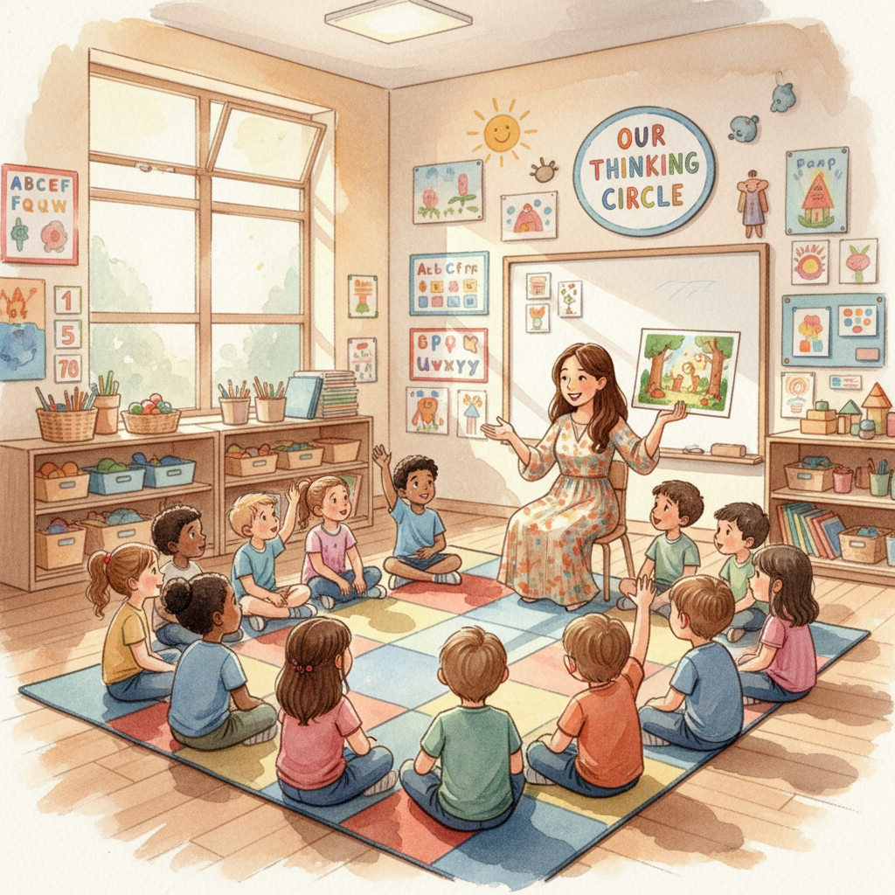

Eve's Thinking Routines Community
Discover how kindergarten children develop critical thinking skills through Harvard Project Zero's innovative thinking routines
About Me

Yi Chen (Eve)
I am an educator with 20 years of experience in early childhood education and an IB workshop leader. I am passionate about exploring how thinking routines can help young children develop critical thinking skills.
I hope to explore together how Harvard's thinking routines can be used in kindergarten and to help build a learning community that supports deep thinking in young children.
